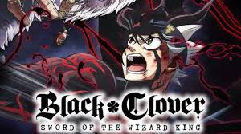
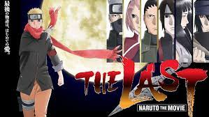
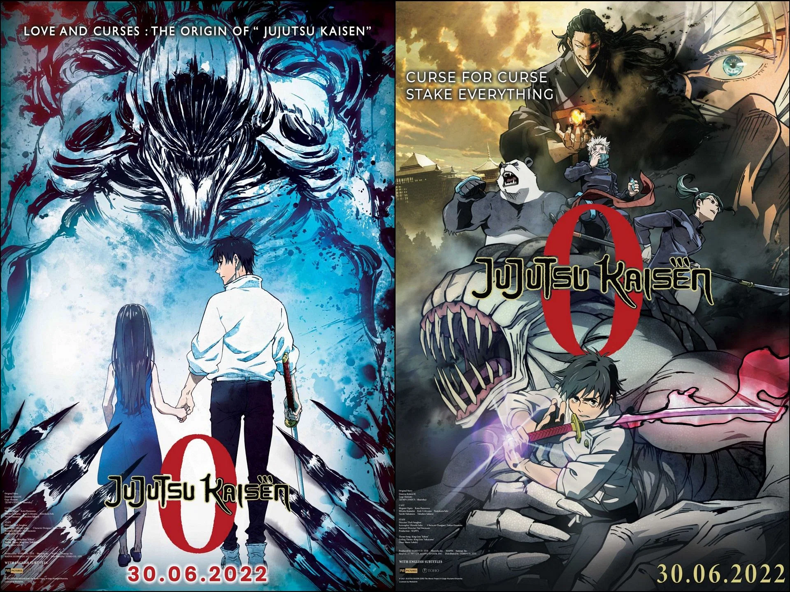

Featured Movie

Black Clover: Sword of the Wizard King
Release Date: June 16, 2023
Rating: 7.4/10
A brief summary of the movie's plot and description goes here.
Read MoreLatest Reviews

The Last: Naruto the Movie
Rating: 7.6/10
2014 Japanese animated action-romance film produced by Studio Pierrot and directed by Tsuneo Kobayashi. It is the tenth film based on Masashi Kishimoto's manga and anime Naruto, and the first to be canon.

Jujutsu Kaisen 0
Rating: 7.8/10
High school student Yuta Okkotsu suffers from being frequently bullied, when one day, his bullies are brutally killed by a Cursed Spirit that clings to him. The higher-ups of the Jujutsu Society wish to have the boy killed, as his curse is a dangerous spirit.